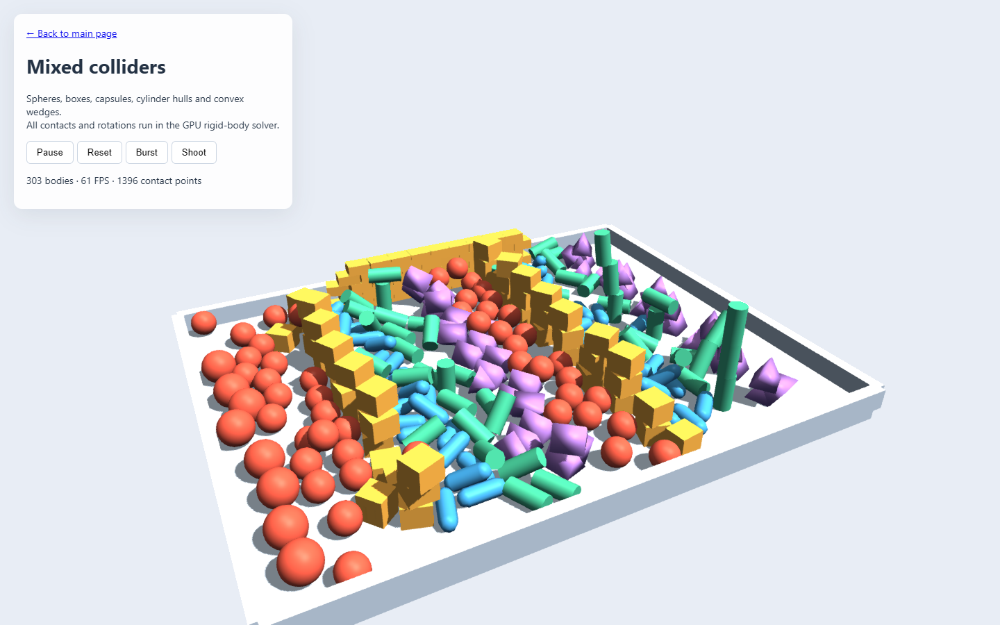
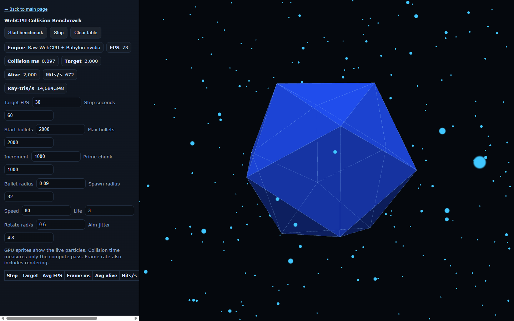
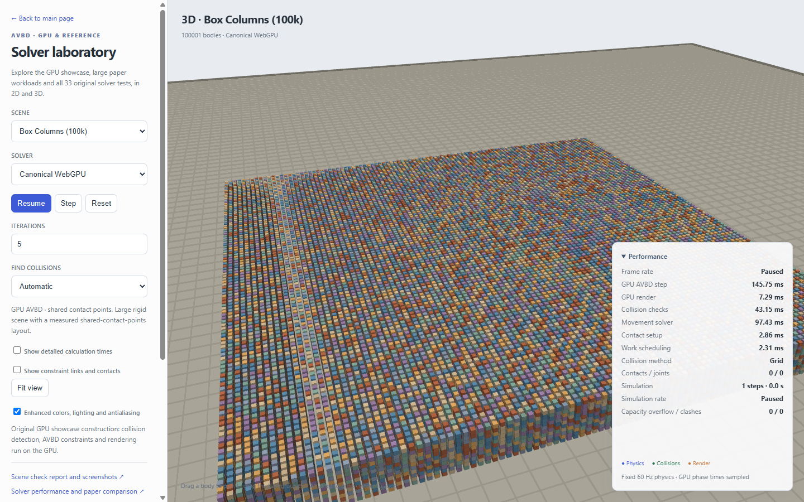
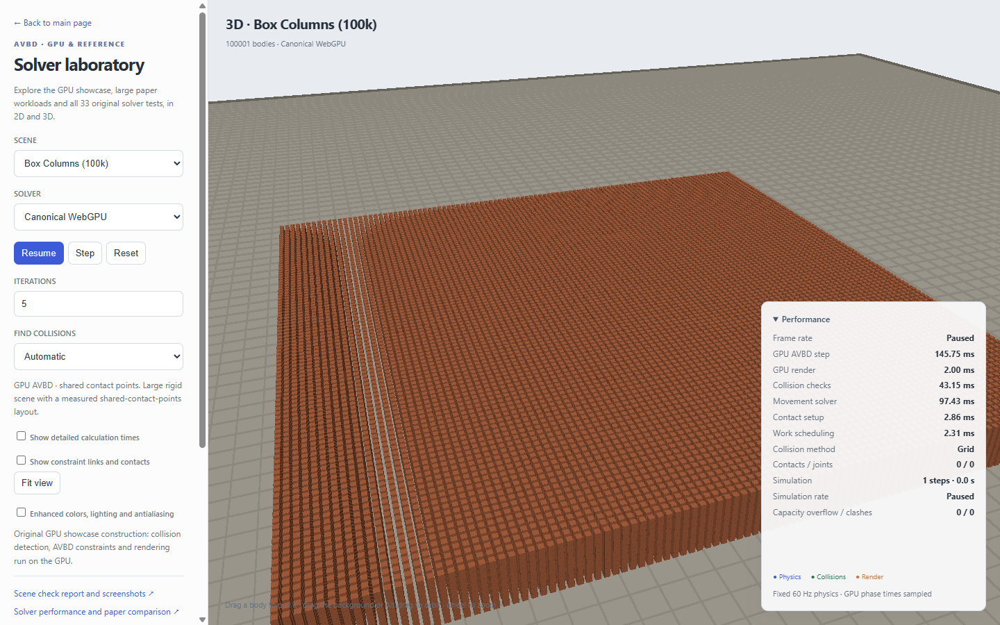

← Back to main page · Scene checks and drawing performance · Play scenes and run benchmarks
Solver performance
Saved reference results: NVIDIA GeForce RTX 4070 Laptop GPU. These timings were recorded on that GPU. Run the browser benchmark to measure your own computer; the paper's desktop RTX 4090 results are shown separately.
The app chooses how to share GPU work
AVBD looks at how many objects are in the scene, how they touch, and whether they are connected. It uses that information to divide the work across your graphics card. The app rechecks the choice when objects or connections change.
These choices keep friction, rotation and the number of solving rounds the same. Collision checks also choose between the grid and HPLOC++ tree automatically; the collision table below explains when each helps.
Using automatic selection in Babylon.js
Start with AvbdPhysics.create({ scene }). Automatic selection is the default. world.solverDecision explains the selected implementation. Selection follows measurements on the test laptop; the fastest layout can vary on other hardware. Deformable scenes keep their required fabric solver.
Read this first
Smaller time = faster simulation. A millisecond (ms) is a thousandth of a second. The numbers show how long the graphics card takes to advance the simulation once. Think of it as making one new snapshot of where the objects belong.
Find touching objects: work out what is colliding. Move objects: work out how they slide, spin and push each other. The smaller stages prepare those calculations and decide which objects can be worked on together.
Drawing is separate. Making the picture is measured in the scene check report. A slow number on this page comes from physics, not lighting or antialiasing.
For 60 updates a second, there is about 16.7 ms for each update. That frame must include every physics step plus drawing. The ragdoll net runs at 240 physics steps per second, so it needs four steps per 60 Hz frame: multiply its per-step time by four before adding drawing time. A fast individual step does not guarantee 60 FPS.
How times and slower steps are measured
Tables show average GPU time per fixed simulation step. “p95” means 95 out of 100 measured steps fit within that time. It helps reveal occasional slower steps. GPU timings exclude CPU submission and copying measurements back.
Which scenes were checked?
68/68 scenes completed the benchmark and passed its basic correctness checks. Longer checks of how scenes move are in the scene report.
Play scenes or run your own benchmark ↗ · Download measurements
Check counts and timing settings
Checks require valid positions and rotations, enough contact storage and no constraints shared by objects solved in the same group. 6,120 checked steps and 2,040 separately measured GPU steps. Each scene keeps its own timestep and solving-round count. Runs use 60 warmup steps and 30 measured steps. Compare times only when the scene, settings, hardware and method match.
Dense 2D collision loads
Touching boxes fill a container. All three scenes use ten solver iterations at 60 steps per simulated second. These numbers measure physics; drawing is excluded. The last column shows whether finding contacts or calculating movement takes longer.
Use contact count together with time to judge collision load. 2D boxes and 3D shapes generate different contacts and need different calculations, so matching object counts alone does not make an equivalent workload. Play or benchmark these scenes ↗
Where physics time goes
A shorter bar means less time. Each scene uses the automatically selected GPU AVBD implementation.
Find touching objectsPrepare contactsPlan parallel workMove objects
100,001 objects · 5 solver iterations per step
Each step advances 16.67 ms of simulated time (60 steps per simulated second).
GPU AVBD · NVIDIA GeForce RTX 4070 Laptop GPU
Physics per step 5.89 ms
Moving and rotating objects takes the most time. Drawing is excluded.
Where the time goes
Slower steps and solver settings
95% of measured physics steps finish within 6.25 ms. 30 separately timed steps.
{
"dt": 0.016666666666666666,
"gravity": -10,
"iterations": 5,
"betaLin": 10000,
"betaAng": 100,
"alpha": 0.99,
"gamma": 0.999,
"matchNearest": true,
"faceBias": true,
"reuseContacts": true,
"startAtRest": true,
"massPenalty": true,
"windSpeed": 0,
"windAngle": 0,
"windGust": 0.4,
"windPressure": 0.72,
"up": [
0,
0,
1
]
}110,442 objects · 4 solver iterations per step
Each step advances 16.67 ms of simulated time (60 steps per simulated second).
GPU AVBD · NVIDIA GeForce RTX 4070 Laptop GPU
Physics per step 16.20 ms
Moving and rotating objects takes the most time. Drawing is excluded.
Where the time goes
Slower steps and solver settings
95% of measured physics steps finish within 16.67 ms. 30 separately timed steps.
{
"dt": 0.016666666666666666,
"gravity": -10,
"iterations": 4,
"betaLin": 10000,
"betaAng": 100,
"alpha": 0.99,
"gamma": 0.999,
"matchNearest": true,
"faceBias": true,
"reuseContacts": true,
"startAtRest": true,
"massPenalty": true,
"windSpeed": 0,
"windAngle": 0,
"windGust": 0.4,
"windPressure": 0.72,
"up": [
0,
0,
1
]
}28,114 objects · 4 solver iterations per step
Each step advances 16.67 ms of simulated time (60 steps per simulated second).
GPU AVBD · NVIDIA GeForce RTX 4070 Laptop GPU
Physics per step 3.06 ms
Moving and rotating objects takes the most time. Drawing is excluded.
Where the time goes
Slower steps and solver settings
95% of measured physics steps finish within 3.17 ms. 30 separately timed steps.
{
"dt": 0.016666666666666666,
"gravity": -10,
"iterations": 4,
"betaLin": 10000,
"betaAng": 100,
"alpha": 0.99,
"gamma": 0.999,
"matchNearest": true,
"faceBias": true,
"reuseContacts": true,
"startAtRest": true,
"massPenalty": true,
"windSpeed": 0,
"windAngle": 0,
"windGust": 0.4,
"windPressure": 0.72,
"up": [
0,
0,
1
]
}23,617 objects · 5 solver iterations per step
Each step advances 4.17 ms of simulated time (240 steps per simulated second).
GPU AVBD · NVIDIA GeForce RTX 4070 Laptop GPU
Physics per step 2.22 ms
Moving and rotating objects takes the most time. Drawing is excluded.
Where the time goes
Slower steps and solver settings
95% of measured physics steps finish within 2.24 ms. 30 separately timed steps.
{
"dt": 0.004166666666666667,
"gravity": -10,
"iterations": 5,
"betaLin": 10000,
"betaAng": 100,
"alpha": 0.99,
"gamma": 0.999,
"matchNearest": true,
"faceBias": true,
"reuseContacts": true,
"startAtRest": true,
"massPenalty": true,
"windSpeed": 0,
"windAngle": 0,
"windGust": 0.4,
"windPressure": 0.72,
"up": [
0,
0,
1
]
}Does sleeping make a resting 3D stack faster?
NVIDIA GeForce RTX 4070 Laptop GPU · 16,384 resting boxes · 10 solving rounds · 60 physics steps per simulated second. Each bar shows a typical step (the median). Shorter is faster. Drawing is excluded; sleep, wake and support checks are included.
Sleeping offSleeping on
Repeat 1
Sleeping off 7.61 ms
Sleeping on 6.66 ms
12.4% less time with sleeping. 16,384 boxes asleep. Largest position difference: 1.90 cm.
Repeat 2
Sleeping off 7.63 ms
Sleeping on 7.01 ms
8.1% less time with sleeping. 16,384 boxes asleep. Largest position difference: 1.90 cm.
Repeat 3
Sleeping off 6.18 ms
Sleeping on 5.30 ms
14.2% less time with sleeping. 16,384 boxes asleep. Largest position difference: 1.90 cm.
Sleeping lets quiet boxes stop doing movement work until disturbed. This stack is different from the cannon impact: impacts wake bodies and can reduce the saving. Sleeping also freezes small remaining movements, so final positions may differ slightly. These results do not change the always-awake paper comparisons.
What does sleeping cost while the boxes are still moving?
- Repeat 1: sleeping off 11.84 ms; sleep checks enabled 10.21 ms.
- Repeat 2: sleeping off 9.21 ms; sleep checks enabled 10.30 ms.
- Repeat 3: sleeping off 10.70 ms; sleep checks enabled 10.58 ms.
Both start with every box awake. Times include the extra sleep checks.
Pose-copy results and full method · Download measurements · Run this benchmark on your computer
Does sleeping make a resting 2D stack faster?
NVIDIA GeForce RTX 4070 Laptop GPU · 10,000 resting boxes · 10 solving rounds · 120 physics steps per simulated second. Each bar shows a typical step (the median). Shorter is faster. Drawing is excluded; sleep, wake and support checks are included.
Sleeping offSleeping on
Repeat 1
Sleeping off 3.44 ms
Sleeping on 2.93 ms
14.6% less time with sleeping. 10,000 boxes asleep. Largest position difference: 0.14 cm.
Repeat 2
Sleeping off 3.81 ms
Sleeping on 3.15 ms
17.3% less time with sleeping. 10,000 boxes asleep. Largest position difference: 0.14 cm.
Repeat 3
Sleeping off 3.48 ms
Sleeping on 3.06 ms
12.2% less time with sleeping. 10,000 boxes asleep. Largest position difference: 0.14 cm.
Sleeping lets quiet boxes stop doing movement work until disturbed. This stack is different from the cannon impact: impacts wake bodies and can reduce the saving. Sleeping also freezes small remaining movements, so final positions may differ slightly. These results do not change the always-awake paper comparisons.
What does sleeping cost while the boxes are still moving?
- Repeat 1: sleeping off 11.24 ms; sleep checks enabled 10.32 ms.
- Repeat 2: sleeping off 5.29 ms; sleep checks enabled 4.79 ms.
- Repeat 3: sleeping off 4.36 ms; sleep checks enabled 3.91 ms.
Both start with every box awake. Times include the extra sleep checks.
Pose-copy results and full method · Download measurements · Run this benchmark on your computer
Letting settled bricks rest
Sleeping skips movement work for settled bricks until something disturbs them. Related sleeping work is sent to the GPU together. Physics and sleeping take 11.83 ms in the recorded 100K-wall run. Drawing is excluded.
Sleeping checks
Tests check that sleeping retains physical mass and that impacts or lost supports wake the affected objects. Download measurements
Exact capsule collisions
A capsule is a rod with rounded ends. The GPU now tests that smooth shape directly instead of testing a polygonal shell. This comparison uses 4,096 objects in 2,048 capsule–sphere pairs on NVIDIA GeForce RTX 4070 Laptop GPU.
Rounded segment 0.096 ms
Polygonal capsule 0.134 ms
28.4% less time finding collisions in this workload. This measures collision detection, including finding candidate pairs. Movement, drawing and frame rate are not part of this comparison. Different shape combinations can have different results.
Settings and repeat measurements
Collision-only capsule/sphere pairs; fresh narrowphase every step; 500 warm-up steps and 41 samples per run; analytic/hull/hull/analytic order. GPU timing varies with clock and power state; this is not total application FPS. The table contains each run's median GPU time; bars show the average of those medians. The polygonal capsule is simplified to the package's 32-vertex hull limit.
Download measurements
Handling a step that cannot be solved safely
If the 3D GPU solver runs out of room for contacts, or cannot put touching objects in separate work groups, it holds positions and velocities for that step. The app can then increase capacity. This avoids moving objects with missing collision information or moving two touching objects together before either knows what the other did.
A held step still fails the correctness checks. Valid steps use the same physics equations. Tests force both failure conditions, check that poses, velocities and joint forces stay intact, and verify that movement resumes after capacity grows. Moving platforms and a million-to-one mass ratio are checked too.
When does a collision tree help?
A grid sorts objects into fixed-size cells. A tree groups nearby shapes in boxes that fit them. Long beams can make grid cells much bigger than the small objects around them; the tree avoids checking so many unrelated neighbours.
Automatic selection uses the tree for large, varied-size scenes and nets made from many linked thin plates. These workloads make the grid check too much empty space. Body count alone does not choose the tree. Small scenes and uniform walls or columns retain the grid. Automatic choice follows scene geometry rules. The paired timings help you choose a different method for your machine in the lab or benchmark.
Each row compares the same scene and solving rounds. Drawing and sleeping are excluded. Both simulations stay in GPU memory, so these paired times are separate from the single-world paper comparison. Noisy repeats are retained, rather than removed to improve the result.
Rebuilds, memory and repeat results
Three paired runs per scene, 60 warmup and 60 timed steps per method. Execution order alternates each step. Every collider and tree bound is updated each step; the tree is rebuilt every 64 steps. Timed windows include periodic rebuilds. The first build is recorded separately in the JSON, along with primary buffer bytes and all samples. Timing checks flag a difference over 10% in the unchanged movement stage. The automatic threshold is a conservative policy from these workloads, not a guaranteed crossover for every scene or GPU.
Mixed sizes · 1K: -28.9%, -29.2%, -22.1% total-time savings. Tree buffers: 0.1 MiB. First tree step: 0.57 ms. Warm rebuild steps: 3.03 ms on average; slowest recorded tree step: 5.32 ms.
Mixed sizes · 10K: 89.9%, 90.1%, 89.9% total-time savings. Tree buffers: 1.0 MiB. First tree step: 6.97 ms. Warm rebuild steps: 0.75 ms on average; slowest recorded tree step: 0.87 ms.
Mixed sizes · 50K: 93.2%, 93.0%, 93.1% total-time savings. Tree buffers: 5.0 MiB. First tree step: 26.81 ms. Warm rebuild steps: 1.90 ms on average; slowest recorded tree step: 2.15 ms.
Brick ring · 110K: 6.8%, 7.0%, 10.7% total-time savings. Tree buffers: 11.0 MiB. First tree step: 19.12 ms. Warm rebuild steps: 15.75 ms on average; slowest recorded tree step: 17.67 ms.
Brick walls · 506K: 0.1%, 6.0%, 2.5% total-time savings. Tree buffers: 50.6 MiB. First tree step: 63.28 ms. Warm rebuild steps: 58.49 ms on average; slowest recorded tree step: 63.47 ms.
Columns · 100K: 11.6%, 11.5%, 16.6% total-time savings. Tree buffers: 10.0 MiB. First tree step: 61.47 ms. Warm rebuild steps: 5.60 ms on average; slowest recorded tree step: 5.89 ms.
This is a portable hierarchical PLOC treelet builder with stackless traversal, not the paper's single-launch implementation. The same narrowphase, friction, rotation and AVBD equations follow both paths. Pair-set tests cover shapes, filters, giant statics and teleports; physical tests cover joints, floor support, sleeping and wake-up.
Ragdolls on the cloth net
The tree also helps with thin linked plates. It searches boxes that fit the plates, avoiding much of the empty space inside grid cells. Automatic selection uses HPLOC++ for this scene. Both collision methods use the same overlapping plates, limb colliders, five solver iterations and four steps per 60 Hz frame.
Ragdolls landing on the net
Grid3.91 ms/step
HPLOC++ tree3.00 ms/step
23.2% less physics time per step. Finding collisions takes 42.5% less time. Drawing is excluded; this is not a frame-rate measurement.
Measured between 2.00 and 2.17 simulated seconds. Both methods produced the same final candidate-pair, contact and manifold counts in each repeat.
Later in the simulation
Grid4.66 ms/step
HPLOC++ tree3.37 ms/step
27.7% less physics time per step. Finding collisions takes 49.2% less time. Drawing is excluded; this is not a frame-rate measurement.
Measured between 6.00 and 6.25 simulated seconds. Both methods produced the same final candidate-pair, contact and manifold counts in each repeat.
Saved results: RTX 4070 Laptop GPU. Two paired runs per phase alternate execution order each step. Each step checks storage capacity and work-group conflicts. A separate 30-second motion check samples every quarter-second. It checks for submerged limbs and partial limb intersections with the drawn sheet deeper than 5 mm.
Play the ragdoll net ↗ · Impact measurements · Later measurements · Motion checks
Does the tree still handle impacts and settling?
Five heavy scenes each completed 360 checked steps—six simulated seconds—with the tree selected. Positions and rotations stayed valid, contacts fit, and parallel work had no conflicts. The half-million walls away from the ball paths retained their support. Read the checks · See the half-million impact
Download every grid/tree sample · Play or compare scenes ↗
How does this compare with the paper?
This section compares our browser measurements with numbers published by the paper's authors. Browser rows use the app's GPU AVBD solver on a laptop. Paper rows use the authors' separate native implementation on a desktop GPU.
Different computers and scenes affect these numbers. The paper used a powerful desktop RTX 4090. These browser results use NVIDIA GeForce RTX 4070 Laptop GPU. The scenes and collision methods also differ. We need the same scene on the same graphics card to judge which implementation is faster.
110K bricks in a ring
A ball knocks a hole through a circular brick wall. Smaller numbers mean the graphics card finishes the work sooner.
What is “Move + prepare”? Everything needed to move the objects once collisions have been found. Here, moving and rotating them takes 10.58 ms; preparing contacts and arranging parallel work takes 1.01 ms. There is no drawing in either of those numbers.
What takes the most time here? Calculating movement. Finding collisions is quicker. The paper finishes sooner overall, but this table cannot tell us how much of the gap comes from the graphics card versus the code.
Half a million bricks
Two heavy balls roll through rows of triangular walls. The browser builds 505,920 bricks, close to the paper's roughly 510K objects.
RTX 4070 Laptop GPU takes 3.0× as long as the paper's reported total: 53.30 ms versus 17.60 ms. This is a substantial gap. Drawing is excluded, so simpler lighting would not fix it.
Of our 53.30 ms, moving and rotating objects takes 32.08 ms, finding collisions takes 15.81 ms, and preparing contacts and arranging work takes 5.42 ms. Movement is the largest cost.
The extra solving round explains only part of the difference: three rounds still take 49.01 ms, or 2.8× the paper's total. We have not measured how much of the remaining gap comes from hardware, scene differences or implementation efficiency.
The paper lists three solving rounds in its table and four in its picture caption. Both browser versions are available so you can see the cost of that extra round. These are reconstructed walls, rather than the paper's original scene file.
Blocks falling onto fabric
Play the fabric scene ↗. 35,000 blocks, joined together by 72,000 joints, land on fabric containing 10,000 points. The fabric bends and stretches as it catches them.
Paper: 16.00 ms. Browser: 9.17 ms for all physics. This is a different fabric model, so the smaller browser number does not establish that our solver beats the paper.
Our fabric uses elastic links between its points. Collisions check small spheres at those points. The drawn sheet has 19,602 triangles, but its triangles are not collision surfaces. Very small objects or stretched gaps can pass between the samples.
Fabric timings and exact workload
Cloth: 59,002 stretch, shear and bending springs, 396 fixed border points, and 9,604 movable points. Cloth points have three movement directions and no rigid rotation. Blocks retain all six movement and rotation directions. Cloth forces, rigid joints and contacts share the same ten AVBD iterations. The paper's exact material, collision geometry and assets are not reproduced.
Hardware, solver settings and comparison limits
The desktop 4090 has more processing and memory resources than a 4070 Laptop GPU: 16,384 versus 4,608 CUDA cores and a 384-bit GDDR6X versus 128-bit GDDR6 memory interface. These differences matter, but they do not give an exact speed multiplier. Desktop specifications · Laptop specifications
Both ring runs use four iterations and a 1/60 second step. The paper uses DirectX 11 and an LBVH; the browser uses WebGPU and a spatial hash grid. The paper lists α=.95, β=10, γ=.99. The port uses α=.99, βlinear=10000, βangular=100, γ=.999 and mass-scaled initial contact penalties. The wall reconstruction uses a 20-metre-deep ground slab with the same top surface, rather than an infinite ground plane. Collision detection is discrete; this benchmark does not provide CCD.
“Move + prepare” is the total minus collision time. It includes warm starts, movement solving, velocity updates, contact setup and work scheduling. Browser timing excludes initial clears and CPU writes. The ring ends with about 1.21 million contact points; a matching paper contact count is unavailable. Reading measurements between steps can affect GPU clock speeds; clocks were not recorded.
The larger browser examples use 60 warmup steps followed by 30 separately timed steps, with every step checked. Their timings describe the first 1.5 seconds of motion; later piles can cost more. Paper wall collision time is calculated as 17.6−10.3=7.3 ms. The paper supplies no separate cloth collision/solve times.
Read the AVBD paper ↗ · Download larger-scene measurements
How we measured it
The scene catalog and main timing charts start each scene fresh, with drawing and sleeping turned off. They use 60 warmup steps followed by 30 measured steps. The separate collision comparisons include repeated runs. The separate sleeping charts compare sleeping enabled and disabled after objects settle; their settings appear beside the results. Close other GPU-heavy apps when repeating a benchmark.
Exact measurement method
Hardware timestamps split GPU work into four passes, adding some measurement overhead. There is no frame-rate cap. CPU command submission and waiting for measurements are separate from GPU physics time. The live benchmark also records scene construction and CPU submission time in its downloaded results.
Browser: Chrome headless. GPU: NVIDIA GeForce RTX 4070 Laptop GPU. Driver: 32.0.16.1714. Raw measurements include per-step timings, settings and capacity checks. App FPS also depends on drawing, CPU work, waiting and display refresh.
Download measurements
Drawing checks
Colors, lighting and antialiasing improve the interactive view. They are disabled for benchmark rendering and absent from solver-only measurements. These screenshots show the independent visual checks.

Mixed shapes with GPU rotation.
D20 collision particles.
Interactive presentation.
Benchmark rendering.Generated 2026-10-06T01:01:00.816Z. Visual checks · GPU tests